El blackout cubre grandes áreas de la piel con tinta negra sólida, creando un estilo intenso, minimalista y visualmente muy potente.
BUSCA TU ESTILO PREFERIDO
blackout
blackwork


El blackwork combina trazos, sombras y figuras hechas solo con tinta negra. Su estilo fuerte y definido permite crear desde diseños simples hasta piezas complejas y llenas de detalle.
dotwork

 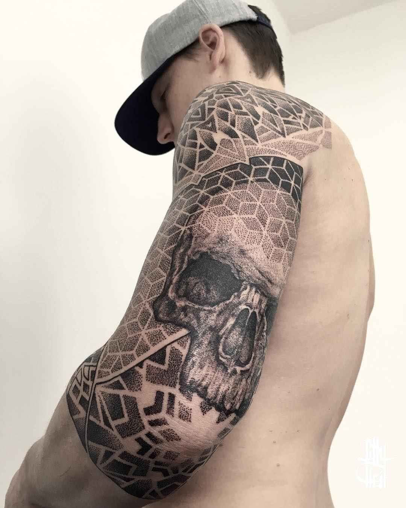
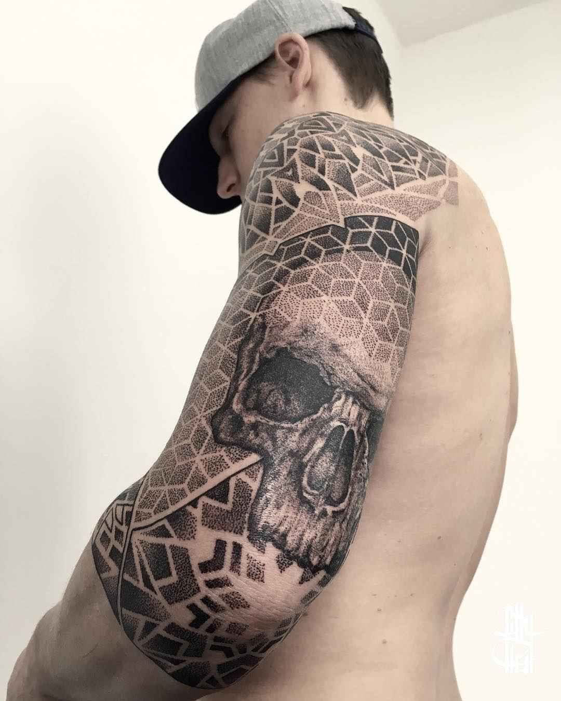
El dotwork se crea a partir de puntos que forman sombras, texturas y figuras. Es un estilo detallado, preciso y visualmente hipnótico.
fineline


El fineline se distingue por sus líneas finas y delicadas, logrando diseños sutiles y elegantes. Es perfecto para tatuajes minimalistas o con mucho detalle en poco espacio.
geometric
 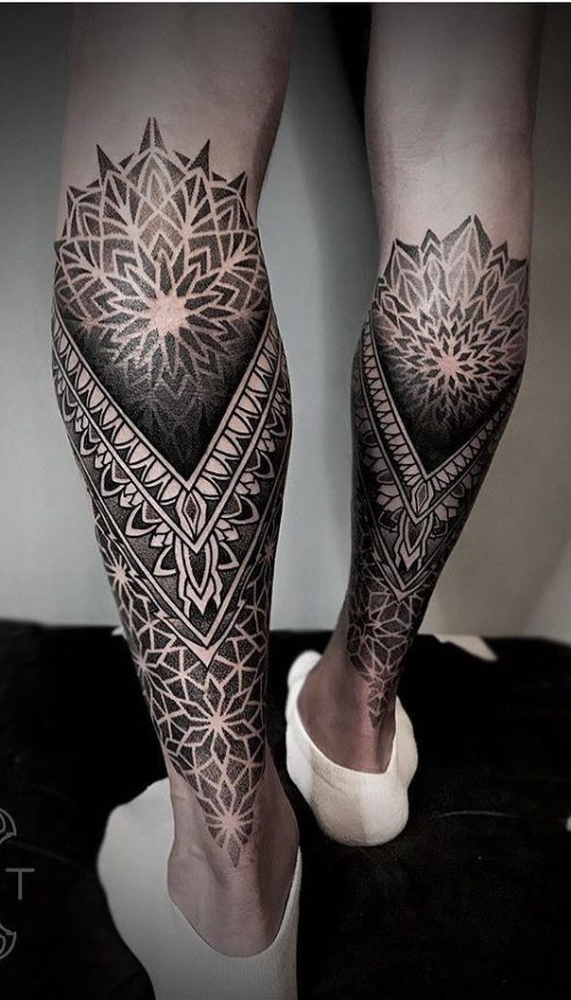
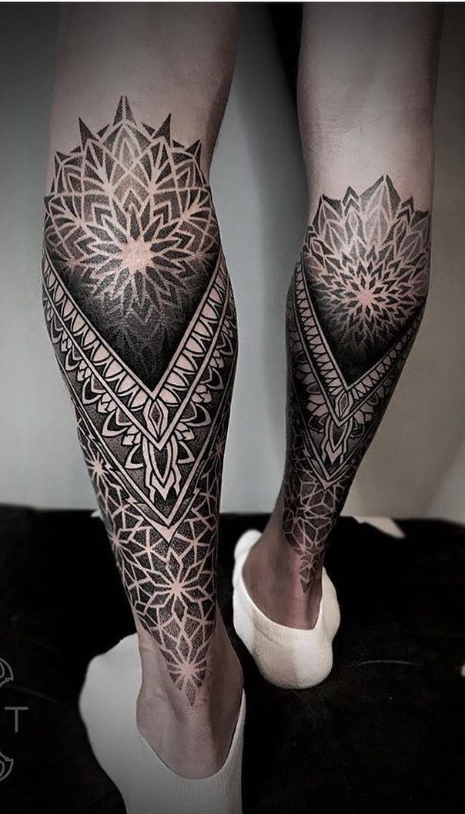
El geometric se centra en formas y patrones geométricos, creando diseños equilibrados y simétricos. Es un estilo moderno y visualmente impactante que combina arte y precisión.
japones
 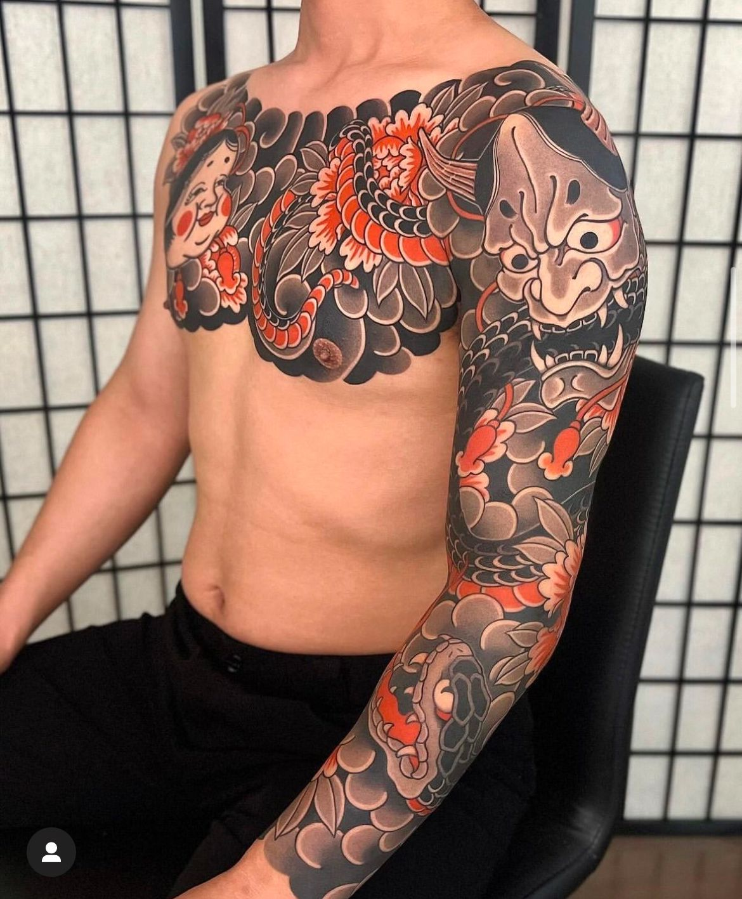
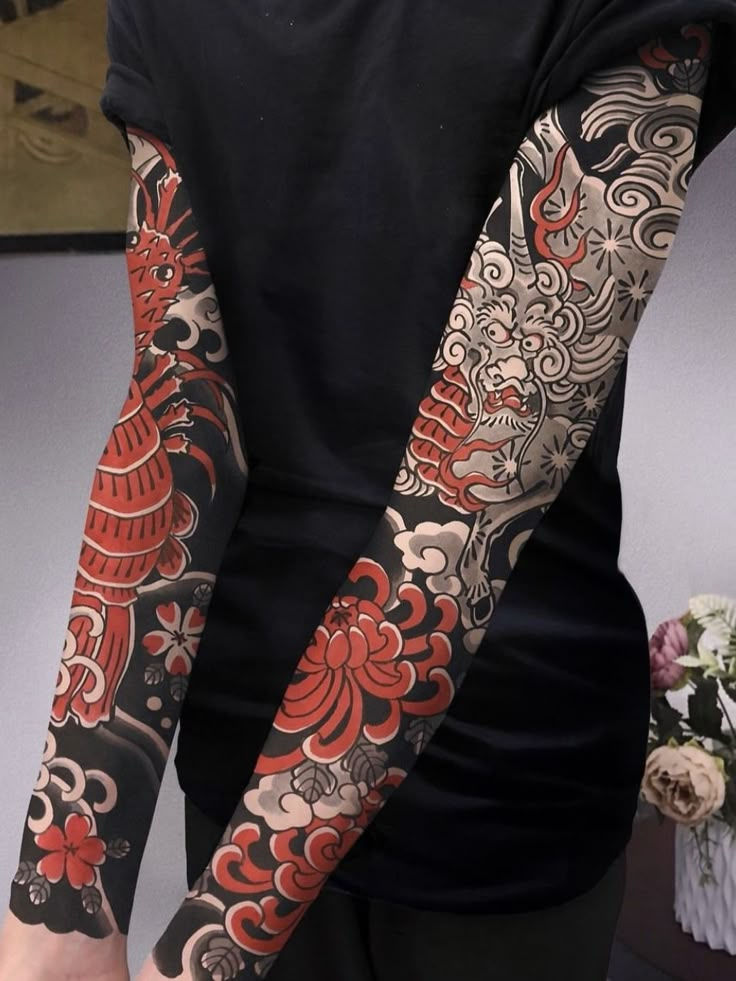
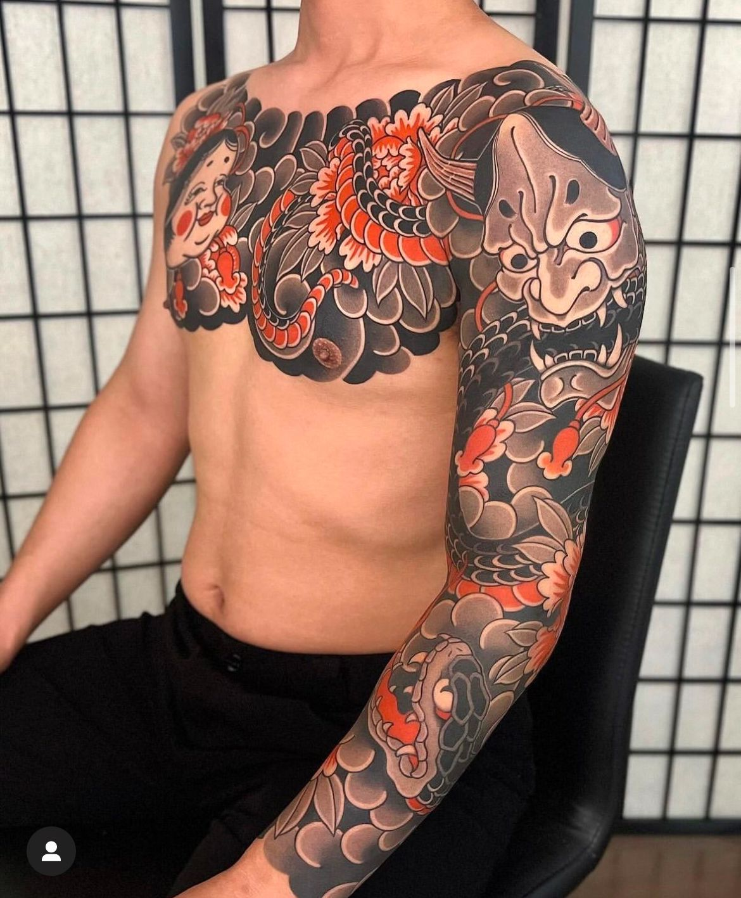
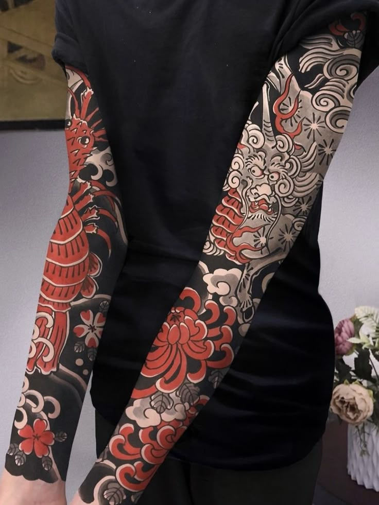
El estilo japonés combina colores vivos y trazos definidos para contar historias a través de motivos tradicionales como dragones, flores y samuráis. Es un estilo detallado, lleno de simbolismo.
neotraditional

 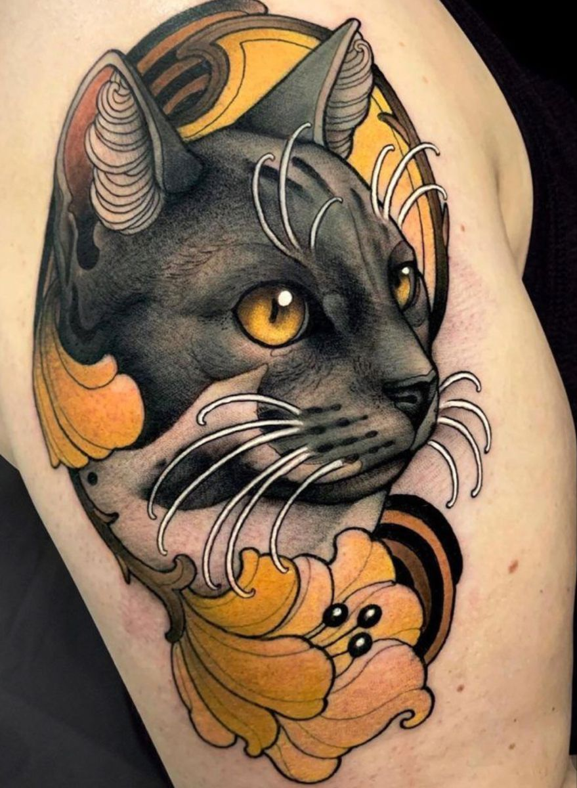
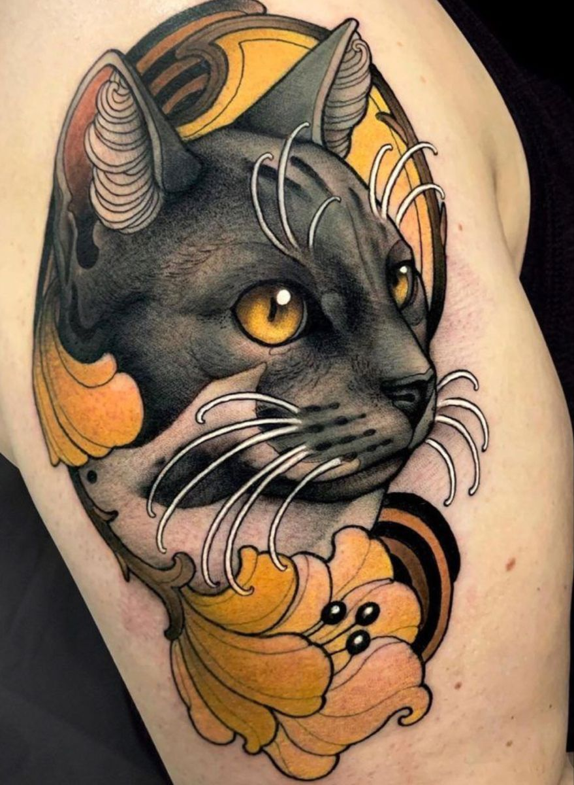
El neotradicional combina la fuerza y los contornos del tatuaje tradicional con colores más suaves y detalles más realistas. Es un estilo llamativo y creativo.
traditional
 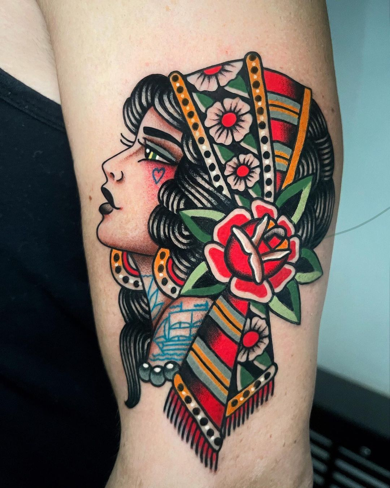
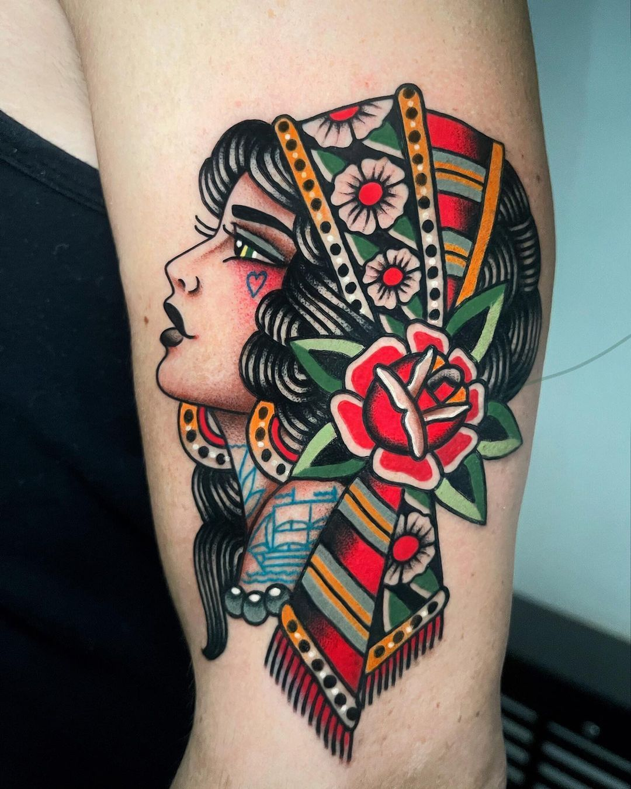

El tradicional, se caracteriza por líneas gruesas, colores sólidos y diseños icónicos como anclas, rosas y calaveras. Es un estilo clásico, reconocible y lleno de carácter.